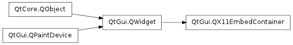

QX11EmbedContainer¶

Synopsis¶
Functions¶
- def clientWinId ()
- def discardClient ()
- def embedClient (id)
- def error ()
Signals¶
- def clientClosed ()
- def clientIsEmbedded ()
- def error (arg__1)
Detailed Description¶
The PySide.QtGui.QX11EmbedContainer class provides an XEmbed container widget.
XEmbed is an X11 protocol that supports the embedding of a widget from one application into another application.
An XEmbed container is the graphical location that embeds an external client widget . A client widget is a window that is embedded into a container.
When a widget has been embedded and the container receives tab focus, focus is passed on to the widget. When the widget reaches the end of its focus chain, focus is passed back to the container. Window activation, accelerator support, modality and drag and drop (XDND) are also handled.
PySide.QtGui.QX11EmbedContainer is commonly used for writing panels or toolbars that hold applets, or for swallowing X11 applications. When writing a panel application, one container widget is created on the toolbar, and it can then either swallow another widget using embed(), or allow an XEmbed widget to be embedded into itself. The container’s X11 window ID, which is retrieved with PySide.QtGui.QWidget.winId() , must then be known to the client widget. After embedding, the client’s window ID can be retrieved with PySide.QtGui.QX11EmbedContainer.clientWinId() .
In the following example, a container widget is created as the main widget. It then invokes an application called “playmovie”, passing its window ID as a command line argument. The “playmovie” program is an XEmbed client widget. The widget embeds itself into the container using the container’s window ID.
int main(int argc, char *argv[]) { QApplication app(argc, argv); if (app.arguments().count() != 2) { qFatal("Error - expected executable path as argument"); return 1; } QX11EmbedContainer container; container.show(); QProcess process(&container); QString executable(app.arguments()[1]); QStringList arguments; arguments << QString::number(container.winId()); process.start(executable, arguments); int status = app.exec(); process.close(); return status; }When the client widget is embedded, the container emits the signal PySide.QtGui.QX11EmbedContainer.clientIsEmbedded() . The signal PySide.QtGui.QX11EmbedContainer.clientClosed() is emitted when a widget is closed.
It is possible for PySide.QtGui.QX11EmbedContainer to embed XEmbed widgets from toolkits other than Qt, such as GTK+. Arbitrary (non-XEmbed) X11 widgets can also be embedded, but the XEmbed-specific features such as window activation and focus handling are then lost.
The GTK+ equivalent of PySide.QtGui.QX11EmbedContainer is GtkSocket. The corresponding KDE 3 widget is called QXEmbed.
See also
PySide.QtGui.QX11EmbedWidget XEmbed Specification
- class PySide.QtGui.QX11EmbedContainer([parent=None])¶
Parameters: parent – PySide.QtGui.QWidget Creates a PySide.QtGui.QX11EmbedContainer object with the given parent .
- PySide.QtGui.QX11EmbedContainer.Error¶
Constant Description QX11EmbedContainer.Unknown An unrecognized error occurred. QX11EmbedContainer.InvalidWindowID The X11 window ID of the container was invalid. This error is usually triggered by passing an invalid window ID to embed().
- PySide.QtGui.QX11EmbedContainer.clientClosed()¶
- PySide.QtGui.QX11EmbedContainer.clientIsEmbedded()¶
- PySide.QtGui.QX11EmbedContainer.clientWinId()¶
Return type: long If the container has an embedded widget, this function returns the X11 window ID of the client; otherwise it returns 0.
- PySide.QtGui.QX11EmbedContainer.discardClient()¶
Detaches the client from the embedder. The client will appear as a standalone window on the desktop.
- PySide.QtGui.QX11EmbedContainer.embedClient(id)¶
Parameters: id – long
- PySide.QtGui.QX11EmbedContainer.error()¶
Return type: PySide.QtGui.QX11EmbedContainer.Error Returns the last error that occurred.
- PySide.QtGui.QX11EmbedContainer.error(arg__1)
Parameters: arg__1 – PySide.QtGui.QX11EmbedContainer.Error